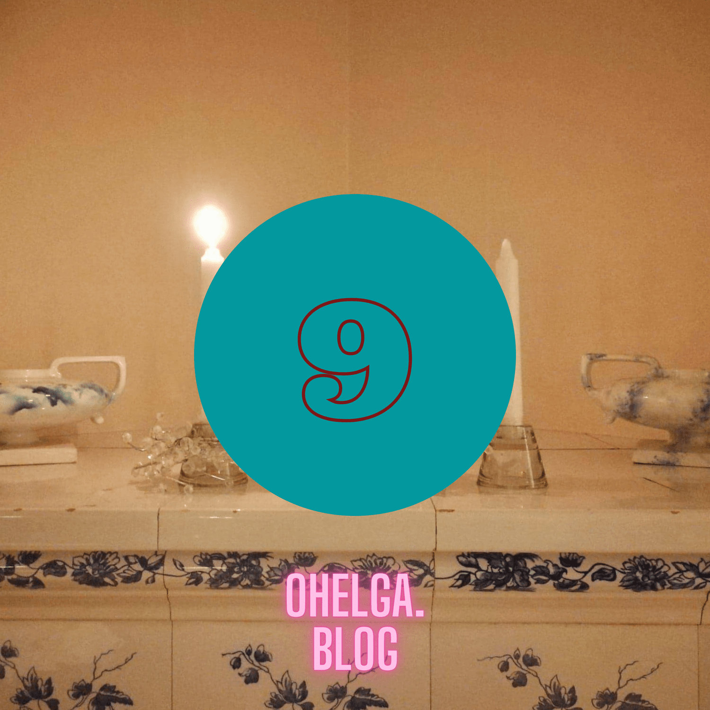

O, helga podcast. · 2022
9. Kyrkoversionen av klassiska versionen av kyrkoversionen
Avaa äänitiedostoTänään Turun Yliopiston humanistisen tiedekunnan kunniantohtori laulaa meille! En Britatårta som sväller på mitten.
Linkit kappaleeseen:
Apple Music:
Karita Mattila - Cantique de Noel, "Oi jouluyö"
Spotify:
Karita Mattila - Cantique de Noel, "Oi jouluyö"

Kommentit / Kommentarer (3)
<p>Desto fler versioner som spelas upp desto svårare att rangordna. Jag fäster mig vid hennes vibrato som hon inte delar med någon av de andra sju hittills. Jag lägger henne högt på lista såhär långt. </p>
<p>Jag vet inte, men jag är tämligen oberörd av detta. Jo det var ett perfekt framförande, men det var kanske det som var problemet. Kanske säger det något om min musikalitet. Eller så har jag helt enkelt fejl i hövo.</p>
<p>Men ja! Visst är det svårare att veta vad man tycker ju fler man lyssnar till. Jag tycker ändå att jag, efter sju års lyssnande, börjar komma fram till vilka olika "genrer" jag kan uppskatta, och vilka jag har svårare att ta till mig. </p>